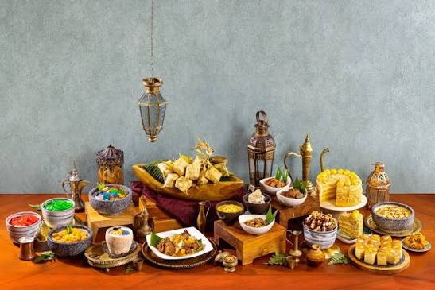
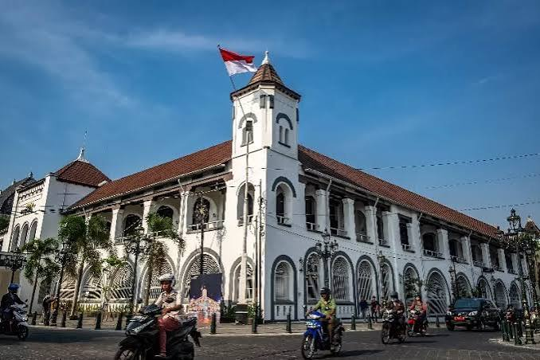

JELAJAHI KULINER NUSANTARA
Temukan keberagaman Kuliner Indonesia Dari Daerah Banjar, Jawa, dan Padang.

RASA DAN BUDAYA
Setiap Daerah di Indonesia memiliki cita rasa, Bahan, Rempah, dan tradisi pengolahan Makanan yang berbeda-beda.
Indonesia memiliki kekayaan kuliner yang sangat beragam. Makanan tradisional berkembang mengikuti budaya dan kebiasaan masyarakat di setiap daerah.
RasaNusantara memperkenalkan tiga daerah kuliner, yaitu Banjar, Jawa, dan Padang. Ketiganya memiliki karakteristik serta tradisi kuliner yang berbeda dan menjadi bagian dari kekayaan budaya Indonesia.
Kenali karakteristik kuliner dari tiga daerah pilihan Nusantara.

Kuliner Jawa memiliki berbagai makanan yang berkembang dari tradisi dan budaya masyarakat di berbagai wilayah Pulau Jawa.
Lihat KulinerKuliner Banjar merupakan bagian dari budaya Kalimantan Selatan dengan berbagai cita rasa dan tradisi pengolahan makanan.
Lihat KulinerKuliner Padang memiliki ciri khas dalam penggunaan rempah berbagai teknik pengolahan makanan dan tradisi cita rasa dalam pengolahan makanan.
Lihat KulinerTENTANG KULINER
Kuliner bukan hanya tentang makanan, tetapi juga menjadi bagian dari identitas dan kebudayaan masyarakat Indonesia.
Setiap hidangan memiliki cerita yang berkaitan dengan lingkungan, bahan makanan, tradisi, dan kebiasaan masyarakat setempat.